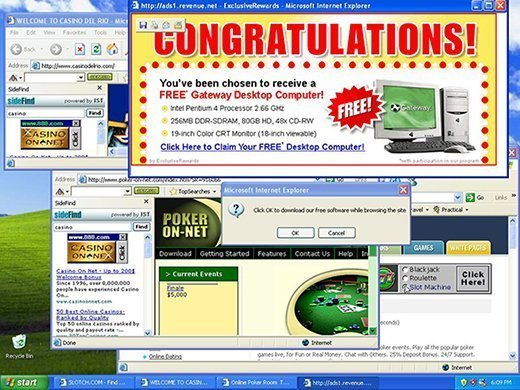

Malware
Malware (Malicious Software) is an umbrella term of cybercrime that involves a
software or code intended to harm an infected gadget. Malware developers use malware for
stealing user information, damaging the infected hardware, accessing the victim’s computer,
obtaining financial gain, getting entertainment, and many more. There are various types of malware:
the virus, worm, spyware, ransomware, trojan horse, adware, and botnet.
Figure 1: A capture of the WANNACRY ransomware attack
Retrieved from: The New York Times
Various types of Malware
- A virus is a type of malware that is injected to an unaffected gadget by attaching to a file or
e-mail. It is one of the more common malware around the internet.
- A worm, unlike the virus, is programmed to transmit itself from one computer to another. An example of this is
the infamous "ILOVEYOU" worm, which was spread through e-mail.
- A spyware is a silent malware designed to monitor the affected user, which could lead security
information being recorded.
- A ransomware is type of malware that hijacks and encrypts the user's computer files for ransom. It prompts the
user to send money to the developer in exchanges for the encrypted files. One famous example of ransomware is the 2017
WANNACRY malware which affected more than 200,000 people in various workplaces.
- A trojan horse is a common malware that introduces itself as a harmless treat to unsuspecting victims. As
the victim proceeds to open the file attached with the malware, it resumes to collect and exploit data, spy the user's
behavior, or execute damages to the hardware.
- An adware is a type of malware that forces advertisements in display. It can exploit these pop-up advertisements to
ruin one's computer, collect information, etc.
- A botnet is a type of malware that is known to perform Distributed Denial-of-Service (DDOS) attacks. They are
network-connected computers that are exploited to collect data, obtain access to one's computer, etc.

Figure 2: The screen of an unfortunate victim of an adware
Retrieved from: SearchSecurity
Prevention
There are multiple ways to prevent malwares into infecting your computer, but one key of prevention is
awareness. Knowing the presence of suspicious links and e-mails, and applying strict security are important.
Here are some ways to eliminate the chances of being affected by a malware:
- Installing an official anti-virus program (BEWARE OF FAKE ANTI-VIRUS PROGRAMS!, as they could also be a subject of malware)
- Since majority of trusted third-party anti-virus programs are premium, Windows offer Windows Security (also known as Windows Defender) for Windows users.
XProtect is Mac's counterpart of Windows Security.
- Avoiding suspicious links and e-mails (Refer to this article).
- Avoiding pirated content/programs
- Doing frequent virus scans (usually provided within anti-virus programs)
- You can also perform scans on files online with VirusTotal which contains
algorithms from multiple anti-virus programs.
- Being careful with connecting to public internet modems.
- Reading comments/reviews and description of an application (Not a guarantee way to identify a malware, but provides a good idea of the product)
Trivia
- Some malwares are limited to one operating system. Although this is true, other malwares begun to become cross-platform.
References
- McAfee. (2020, March 11). What is malware? https://www.mcafee.com/en-ph/antivirus/malware.html
- Idika, Nwokedi & Mathur, Aditya. (2007). A survey of malware detection techniques. Purdue University.
- Egele, M., Kruegel, C., Kirda, E., Yin, H., & Song, D. (2007). Dynamic spyware analysis. 2007 USENIX Annual Technical Conference. https://www.usenix.org/legacy/events/usenix07/tech/full_papers/egele/egele.pdf
- Mohurle, S., & Patil, M. (2017). A brief study of wannacry threat: Ransomware attack 2017. International Journal of Advanced Research in Computer Science, 8(5), 1938-1940.
- What is adware? (2019, August 20). Norton. https://us.norton.com/internetsecurity-emerging-threats-what-is-grayware-adware-and-madware.html
- What Is A Botnet? (2019, August 12). Norton. https://us.norton.com/internetsecurity-malware-what-is-a-botnet.html
- What is a DDoS botnet? (2017, July 26). Cloudflare. https://www.cloudflare.com/learning/ddos/what-is-a-ddos-botnet/
NEXT ARTICLE >
You won't see this text on site. Just a placeholder somewhat to use for the open-close ad mechanism.